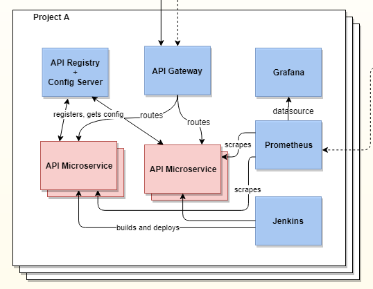

name: inverse layout: true class: inverse, middle --- <center> ## API Platform Team # <strong> .orange[Developer Talk] </strong> </center> <br/> <br/> <br/> ```text _ _ _ __ __ _ _ __(_) _ __| |__ _| |_ / _|___ _ _ _ __ / _` | '_ \ | | '_ \ / _` | _| _/ _ \ '_| ' \ \__,_| .__/_| | .__/_\__,_|\__|_| \___/_| |_|_|_| |_| |_| (c) api platform team ``` --- layout: false ## .grey[API Platform] __.orange[Team]__ <p>We provide <font size="10">components</font> and a <font size="10">toolset</font> to support your API development.<p> <p>A <font size="10">modular</font> openshift / kubernetes development stack which consists (among other things) of an API-gateway, a service registry, a config-server, prometheus / grafana for monitoring and a spring-boot based microservice which follows the api-first principle.</p> <br> ``` _ _ _ __ __ _ _ __(_) _ __| |__ _| |_ / _|___ _ _ _ __ / _` | '_ \ | | '_ \ / _` | _| _/ _ \ '_| ' \ \__,_| .__/_| | .__/_\__,_|\__|_| \___/_| |_|_|_| |_| |_| (c) api platform team ``` --- ## .grey[ API Platform ] __ .orange[Components]__ <center>  <p><strong><i class="fab fa-github-square"></i> https://github.axa.com/axa-de-api-platform</strong></p> </center> --- ## .grey[ Component ] <i class="fas fa-arrow-circle-right"></i> __.orange[API Microservice]__ __Under the hood__ - Java - Maven - SpringBoot - OpenAPI Generator - Springfox - SwaggerUI - Spring Cloud Contracts <br>and<br> - WireMock Server (here used as a standalone service) --- ## __ Our .orange[Goal] <i class="fas fa-check-square"></i> is__ to build an <font size="10">API-Microservice</font> <p>with an working API, Intergration-Tests and</p> <p>a corresponding Wire<font size="10">Mock-Server</font></p> mostly through <font size="10">code generation</font> <p>and to demonstrate the <font size="10">API-First-Development</font></p> --- name: inverse layout: true class: inverse, middle --- ## .grey[ Preconfigured ] __Online IDE__ <font size="10">Why</font> an Online-IDE? - focus on .white[ learning ]</strong> and .white[ demonstration ] - preconfigured, .white[ no local setup ] needed - we can .white[ share ] the development space - .white[ showcase ] of how you can interact with your clients, partners .. <br><br> .center[ ## <i class="far fa-play-circle"></i> <a href="https://bit.ly/api-first-workshop" target="_ide"> <strong> .orange[Start the IDE] </strong></a> ] --- layout: false ## __Re.orange[cap]__ 1. generated __source code__ from an __openapi-specification__ <br> (openapi -> productapi.yml) 2. implemented an Product__Service__ which implements the generated interface / delegate 3. used an __Spring-Cloud-Contract__ definition <br>(contract -> productcontract.yml) to generate <br> __Integration-Tests__ and __WireMock-Stubs__ <br> <i class="fa fa-flag" aria-hidden="true"></i> API-implementation, integration-tests and a <br>corresponding mock-server .orange[ __ready__ ] <br> <i class="fa fa-arrow-circle-right" aria-hidden="true"></i> client and service development can start in .orange[ __parallel__ ] --- ## __Re.orange[sources]__ <i class="fab fa-github-square"></i> https://github.axa.com/axa-de-api-platform <i class="fa fa-book" aria-hidden="true"></i> https://confluence.axa.com/confluence/display/DEITAPIPF/DE-IT+API+Platform+Home <hr> <i class="far fa-play-circle"></i> Start your own online IDE by opening <br><font size="10">https://bit.ly/api-first-workshop</font> <br><small>github account required</small>